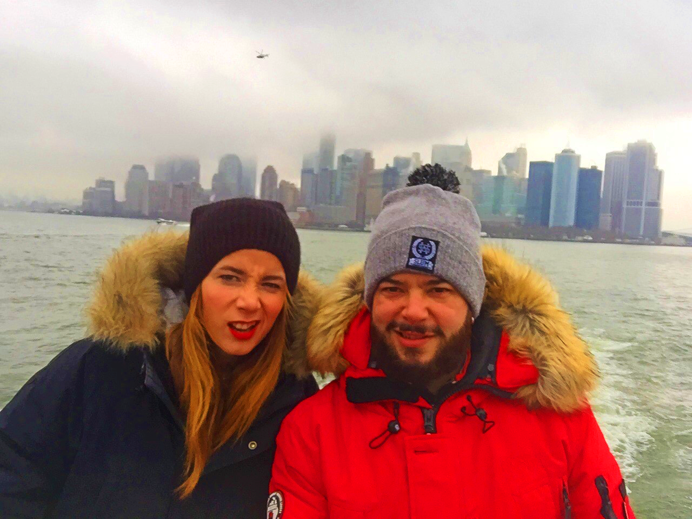
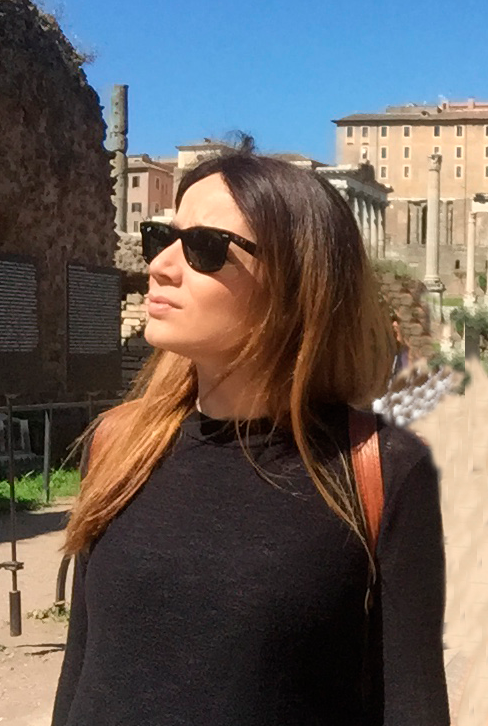
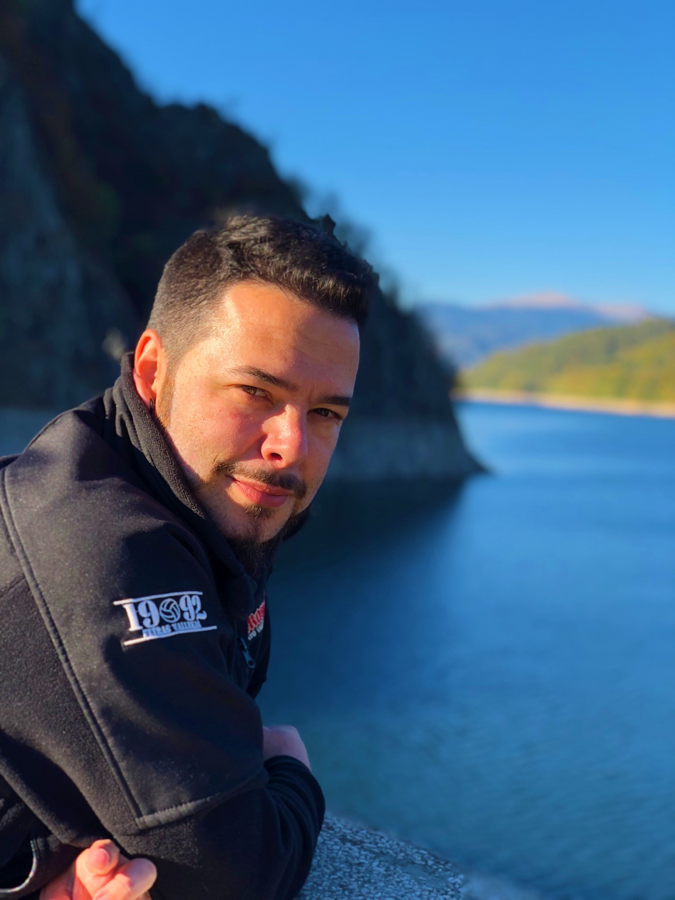

<div class="container animated fadeIn slower">
  <div class="row">
    <div class="col-md-12 col-sm-12 mb-2">
      <div class="text-center">
        
      </div>
      <p class="text-justify">Somos una pareja que una de las primeras cosas que exploramos y 
        explotamos fue la complicidad viajera, con menos de 1 mes de relación teníamos los billetes a 
        Roma. La andadura comenzó en 2016. Ahora nos acompaña Olivia, la pequeña de la casa, viene con 
        fuerza, con solo 15 días sumó su primera bandera y con 3 meses la segunda, nuestros 
        viajes ahora son en familia, pero con la misma filosofia que el primero.</p>
      <p class="text-justify">Nuestros viajes se basan en la premisa low-cost (evidentemente habrá 
        quien considere que algunas de las cosas que hacemos no lo son).</p>
      <p class="text-justify">Todo lo que se vierte en esta web son nuestras experiencias y vivencias 
        en los viajes, con ello pretendemos devolver a la comunidad viajera nuestro pequeño grano de 
        arena puesto que sin ella no podríamos hacer todo lo que hacemos en nuestros viajes. 
        Por lo tanto aconsejamos que no se tome esto como una guía y si como una ayuda en vuestros 
        itinerarios, dado que cada uno tiene su bolsillo y su ritmo de viaje, nosotros consideramos 
        que llevamos uno bastante alto, hablando claro, que pateamos bien.</p>
      <p class="text-justify">Esperamos que os guste y os ayude, si necesitáis cualquier aclaración 
        podéis mandarnos algún comentario. Saludos viajeros!</p>
    </div>
    <div class="col-md-6 col-sm-12">
      <div class="text-center">
        
      </div>
      <h3 class="text-center tituloDiario m-1">Mey</h3>
      <p class="text-justify">Nací en Madrid en 1989 pero mis raíces son vasco-gallegas de ahí mi pasión por el norte. 
        Estudié Educación Social en la Complutense y actualmente me dedico al sector del e-learning. 
        Gracias a este trabajo y a la flexibilidad que nos dan en la empresa a la hora de coger 
        vacaciones, puedo viajar durante todo el año. Me gusta ver la vida de otras personas en otros 
        lugares, y espero seguir teniendo la suerte de hacerlo, a corto y a largo plazo.</p>
    </div>
    <div class="col-md-6 col-sm-12">
      <div class="text-center">
        
      </div>
      <h3 class="text-center tituloDiario m-1">Marcos</h3>
      <p class="text-justify">Nacido en 1984 en Madrid, graduado en Historia y programador de profesión en la actualidad 
        aunque he pasado por diferentes profesiones a lo largo de mi vida.</p>
      <p class="text-justify">Mi gran inquietud me lleva desde que tengo uso de razón a llevar una mochila en los hombros, 
        tengo un deseo voraz de conocer nuevas culturas y su historia, me encanta los restos 
        arqueológicos, los museos y todo lo que nuestros antepasados han ido “dejando” por el camino 
        que nos ayuda a saber de dónde venimos.</p>
      <p class="text-justify">Por último pero no menos importante uno de los “platos” fuertes que busco en los viajes es 
        la gastronomía.</p>
    </div>
    <div class="col-md-12 col-sm-12">
      <h4 class="tituloDiario m-1">Hemos sumado ya:</h4>
      <iframe src="https://www.google.com/maps/d/u/1/embed?mid=1MdFoBjRQsMAkzkSwVZ_2xx9BGeSZUSCg" class="video"></iframe>
    </div>
  </div>
</div>